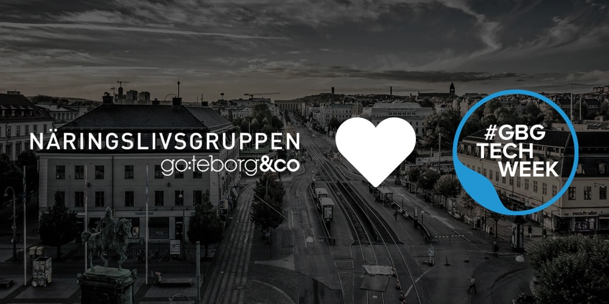

Press material
Press releases:
2017-04-12
The guide of taking your venture to the stock market or 100 million in revenue within two year!
The serial entrepreneur Jarno Vanhatapio and Magnus Emilson will talk about their latest success story, NA-KD and how they ware able to reach 100 million in revenue within two years. While Charlotta Gummeson, CEO at Sahlgrenska Science Park, together with Nasdaq, AstraZeneca and BioVentureHub will talk about the challenge of taking you life science project to an IPO.
2017-04-06
The Trade & Industry Group of Gothenburg&Co. power #gbgtechweek.
This year #gbgtechweek is powered by The Trade & Industry Group of Gothenburg&Co. Together #gbgtechweek and The Trade & Industry Group will focus on bridging the gaps in the tech community between the suburbs and the central of the city that exist today.
2017-03-31

Super business angel Lena Apler and serial entrepreneur Jarno Vanhatapio to #gbgtechweek
The two rockstars, super business angel and founder of Collector Lena Apler, and the serial entrepreneur behind Nelly.com and NA-KD, Jarno Vanhatapio, will attend #gbgtechweek. On Lindholmen Connected Lena will talk about the steps that are needed to move from innovation to business. Jarno will be hosted by Almi Företagspartner, Grant Thornton & Women in Tech and talk on the subject of digital tech and how to create online attraction.
2017-03-28

Inclusion in tech, food tech and hackathon, the first events of #gbgtechweek are here!
The first five events of #gbgtechweek 2017 are here. From inclusion and diversity in the tech community, to food tech and building an app with post-it notes. During #gbgtechweek this year around 20 events will be organised all over Gothenburg. This is the third time the week is organised, and the tech and startup community of Gothenburg has never been more alive.
2017-03-23

#gbgtechweek is back, better than ever with a new concept.
It is time to put #gbgtechweek in your calendar! For the third time, #gbgtechweek is back to gather the nordic tech and startup community in a week full of inspiring events. The tech and startup week is set to take place on May 1 - May 7. The interest to participate has been huge and we have already seen more interest than ever before from both organizers and visitors.